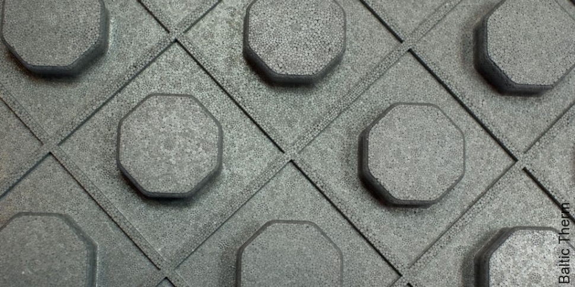

Ventiliatoriniai šildytuvai internetu Internetu pigiau Žema kaina | b-a.eu
Kalba (language)
Pristatymas (shipping to)
Belarus Germany Denmark Estonia Spain France United Kingdom Ireland Italy Lietuva Latvia Norway Poland Russia Sweden Ukraine KuponaiPrekių katalogas
Baldai ir interjeras Statybinės medžiagos Buitinė technika Namai ir buitis Elektronika namams Metalai Įranga ir įrenginiai Santechnika Prekės vaikams Elektros prekės Laisvalaikio ir sporto prekės Prekės civiliams, kariams, medžiotojams Zoo prekės gyvūnams Medicina, sveikata Sodo daržo prekės Sekso prekės Kvepalai ir kosmetika Apranga, avalynė ir aksesuarai Dovanos, suvenyrai, pramogos Auto-Moto Išmanūs namai Žiūrėti visą prekių katalogą Prisijunkitearba registruokitės Apie b-a.eu Kontaktai D.U.K Kaip pirkti
EUR /
/
Pristatymas: Lietuva
Kalba (language) Lietuvių Latviešu English Pусский Pristatymas (shipping to) Belarus Germany Denmark Estonia Spain France United Kingdom Ireland Italy Lietuva Latvia Norway Poland Russia Sweden Ukraine Prekių krepšelis: 0 Parfumerija Moterims Kvepalai moterims Chanel Christian Dior Versace Hugo Boss Guerlain Lacoste Lancome Gucci Escada Giorgio Armani Serge Lutens Lanvin Moschino Chloe Lady Gaga Mexx Revlon Kenzo Calvin Klein Kosmetikos rinkiniai Kosmetika veidui Makiažo pagrindas Veido pudra Skaistalai Maskuojamos priemonės Kosmetika akims Tušai Šešėliai Akių pieštukai ir kontūrai Kosmetika lūpoms Lūpų dažai Blizgesiai Pieštukai lūpoms Kosmetika nagams Negyvosios jūros produktai Vyrams Kvepalai vyrams Chanel Christian Dior Versace Hugo Boss Lacoste Lancome Gucci Giorgio Armani Lanvin Moschino Mexx Kenzo Calvin Klein Visi kvepalai vyrams Skutimosi priemonės Losjonai, balzamai Skutimosi želė Skutimosi putos Higienos priemonės Šampūnai Dušo želė Dezodorantai/antiperspirantai Burnos higiena Muilas Kojų priežiūrai Naujas Kremai nuo saulės Dekoratyvinė kosmetika Kosmetikos rinkiniai Makeup Trading Elizabeth Arden Estee Lauder Clinique Visi rinkiniai Akių šešėliai Christian Dior Artdeco Dermacol Rimmel London Visi šešėliai akims Akių pieštukai ir kontūrai Lancome Christian Dior Rimmel London Visi akių pieštukai Akių tušai Chanel Lancome Christian Dior L´Oreal Paris Clinique Maybelline Rimmel London Visi akių tušai Makiažo pagrindas Revlon Lancome BOURJOIS Paris Christian Dior Visi makiažo pagrindai Veido pudra Clinique Lancome Visos pudros Skaistalai veidui Rimmel London Dermacol Lūpų dažai Christian Dior Max Factor Visi lūpų dažai Lūpų pieštukai Lūpų blizgesiai Dolce & Gabbana Lancome Visi blizgesiai lūpoms Maskuojamosios priemonės veidui Kosmetika nagams Dermacol Sally Hansen Priežiūra ir higiena Veido priežiūra Kremai veidui Kaukės ir serumai Paakių priežiūra Veido valikliai Asmens higiena Dezodorantai ir antiperspirantai Naujas Depiliacija Burnos higiena Intymi higiena Muilas Vonios druskos, aliejai Plaukų priežiūra Šampūnai Plaukų stiprikliai Plaukų modeliavimui Plaukų kaukės Kondicionieriai ir balzamai Plaukų dažai Viso kūno priežiūra Kūno kremai, losjonai Kūną stangrinančios priemonės Kojų priežiūra Rankų priežiūra Kūno šveitikliai Kremai ir losijonai nuo saulės nudegimų, netolygau įdegio Aromatiniai eteriniai aliejai Negyvosios jūros produktai Negyvoji jūra kūnui Kūno losjonai, kremai, sviestai Dušo želė, šveitikliai Papildomos, spec. priemonės Negyvoji jūra plaukams Plaukų balzamai, kaukės Negyvosios jūros šampūnai Negyvoji jūra veidui Paakių zonai Veido kremai, kaukės Veido valymui Papildomos negyvosios jūros priemonės Baldai Svetainės baldai Sekcijos Sofos, sofos-lovos Minkšti kampai Foteliai ir pufai Svetainės komodos Svetainės staliukai TV staliukai Lentynos Miegamojo baldai Miegamojo lovos Čiužiniai Miegamojo spintos Miegamojo baldų kolekcijos Virtuvės baldai Virtuviniai komplektai Virtuvinės spintelės Virtuviniai stalai Virtuviniai stalviršiai Virtuvės baldų priedai Vonios baldai Vonios baldų kolekcijos Vonios spintelės Sisteminiai baldai Šiuolaikiniai sisteminiai baldai Klasikiniai sisteminiai baldai Jaunuolio baldai Jaunuolio baldų kolekcijos Jaunuolio baldų komplektai Jaunuolio kėdės Valgomojo baldai Valgomojo stalai Valgomojo kėdės Prieškambario baldai Prieškambario kolekcijos Prieškambario komplektai Prieškambario spintos Batų dėžės Kabyklos Dekoratyviniai aksesuarai Paveikslai Baldai vaikams Vaikiškos lovos Spintos vaikams Stalai vaikams Kėdės vaikams Lentynos vaikams Kabyklos vaikams Lauko baldai Lauko stalai Lauko kėdės Įvairūs lauko baldai Lauko baldų komplektai Medžio masyvo baldai Mediniai virtuvės baldai Mediniai miegamojo baldai Mediniai valgomojo baldai Mediniai prieškambario baldai Mediniai staliukai Kiti mediniai baldai Biuro baldai Biuro baldų kolekcijos Biuro kėdės Baro ir restorano baldai Baro, restorano stalai Baro, restorano kėdės Statyboms Statybiniai blokeliai ir plytos Akyto betono blokeliai Silikatiniai blokeliai Silikatinės plytos Keramzitiniai blokeliai Keraminiai blokeliai Keraminės plytos Klinkerinės plytos Betono blokeliai Pamatiniai blokeliai Statybinės sąramos Stogų ir sienų dangos Beasbestinis šiferis Bituminės čerpelės Bituminiai lakštai PVC lakštai Prilydomos dangos Betoninės čerpės Keraminės čerpės Profiluota skarda Cedral apkala Sandwich plokštės Komplektavimo detalės Statybiniai mišiniai Cementas Mūro mišiniai Statybiniai klijai Gipsas Glaistas Išlyginamieji mišiniai Tinko mišiniai Cheminiai priedai Šilumos izoliacija Akmens vata Stiklo mineralinė vata Putų polistirenas Ekonominis polistirolas Termoizoliacinės plokštės Šilumos izoliacinis tinkas Kita šilumos izoliacija Statybinės plokštės Gipso kartonas (GKP) Orientuotų skiedrų plokštės (OSB) Fanera Cemento drožlių plokštės (CDP) Medžio drožlių plokštės (MDP) Medžio plaušo plokštės (MPP) Tvoros Tvorų segmentai Stulpai tvoroms Vartai Tvorų aksesuarai Tinklai tvoroms Skaldytų blokelių tvoros Betoninės tvoros Skardinės tvoros Kaminų sistemos Schiedel kaminai Fibo kaminai Kerapor kaminai Aplinkos tvarkymo elementai Grindinio trinkelės Klinkerio trinkelės Šaligatvio plytelės Kelio ir vejos bordiūrai Šulinių žiedai Dekoratyviniai gaminiai Apdailos medžiagos Apdailos plytelės Grindų apdailos medžiagos Sienų apdailos medžiagos Lubų apdailos medžiagos Apdailos sujungimo profiliai Dažai ir glaistai Emulsiniai dažai Lakai Akriliniai dažai Aliejiniai dažai Grindų dažai Emaliniai dažai Aerozoliniai dažai Dažymo įrankiai Gruntai Glaistai Rūdžių surišėjai, modifikatoriai Medžio tvirtinimo elementai Vinys Medsraigčiai, smeigės Kabliai (pusiaukilpiniai, įsukami) ir kilpos Sraigtai Din 7981, cinkuoti Sraigtai Din 571, cinkuoti Metalo tvirtinimo elementai Varžtai Veržlės Poveržlės Sraigtai Kniedės Vielokaiščiai Skiedikliai ir valikliai Acetonas Nefrazas Nitroskiedikliai Terpentinas Vaitspiritas Žibalas Skiedinio dėmių valikliai Specialios paskirties valikliai Tinklai, lynai, vielos, grandinės Statybiniai tinklai Vieliniai lynai, vielos Grandinės Plieninių lynų ir grandinių tvirtinimo elementai Tvirtinimo elementai Metalo profiliai Kaiščiai GKP tvirtinimo elementai Šilumos izoliacinių medžiagų tvirtinimo elementai Stogų, sienų tvirtinimo elementai Langai, durys, palangės, laiptai Stoglangiai Vidaus ir lauko durys Laiptai Durų stogeliai Palangės Plėvelės stogams ir sienoms Antikondensacinė plėvelė Difuzinė plėvelė Garo izoliacinė plėvelė Priešvėjinė plėvelė Apsauginės medžiagos Statybinė mediena Hidroizoliacija, hermetikai, impregnantai Poliuretaninės putos Pistoletai hermetikams Putų pistoletų valikliai Hidroizoliacinės medžiagos Impregnantai Silikoniniai hermetikai Akriliniai hermetikai Ugniai atsparūs hermetikai Bituminis siūlių užpilas Vandens suvedimo sistemos Lietvamzdžiai ir latakai Paviršinio vandens surinkimas Sodui, daržui Sėklos Daržovių, vaisių Gėlių Prieskonių Šiltnamiai Sodo įrankiai Grąžtai Grėbliai Įrankiai miškui Įrankiai vaikams Karučiai Kastuvai Kirviai Peiliai Pjūklai Šakės Sekatoriai Sodo žirklės Krūmapjovės ir trimeriai Lapų pūstuvai Mini traktoriai Moto blokai Pjūklai (benzininiai, elektriniai) Šakų, malkų smulkintuvai Ūkinės prekės Kopėčios Šluotos Kitos Žoliapjovės, vėjapjovės Fontanai Prekybinės palapinės Sniego valymo technika Sniego kastuvai Sniego stumdytuvai Sniego valytuvai Laisvalaikis Prekės sportui Prekės turizmui Vandens gaiva Prekės žvejybai Muzikos instrumentai Motociklininkui Rimtesniam modeliavimui Vaikams Namams Jai ir Jam Išpardavimai Akcijos Prekių katalogas Mano meniu Daugiau +370 655 42414 +370 699 62969 info@b-a.eu 8:00-17:00 d.d. Santechnika Radiatoriai, konvektoriai, elektriniai šildytuvai Šildytuvai ventiliatoriniai Išvalyti visus filtrus Rodyti Aktyvias (11) Išparduotas (20) Gamintojas Taip pat siūlome: Konvekciniai šildytuvai Konvektoriai Radiatoriai Rankšluoščių džiovintuvai, gyvatukai Šildymo kilimėliai, kabeliai Šildytuvai tepaliniaiVentiliatoriniai šildytuvai internetu pigiau
Elektrinis šildytuvas ZYLE, ZY09FH su liepsnos imitacija
Kaina: 60.72 €Šildymo ventiliatorius Beper RI.201
Kaina: 18.98 €Šildymo ventiliatorius Beper RI.090
Kaina: 19.14 €Šildymo ventiliatorius Beper RI.096
Kaina: 21.70 €Šildymo ventiliatorius Beper RI.080
Kaina: 26.50 €Šildymo ventiliatorius Beper RI.093
Kaina: 23.72 €Šildymo ventiliatorius Beper RI.092
Kaina: 19.31 €GRATUS SPV01 Termoventiliatorius
Kaina: 9.18 €Elektrinis šildytuvas Imetec Eco Silent Ion IM4004M
Kaina: 54.99 €Elektrinis šildytuvas-ventiliatorius IMETEC IM4012M
Kaina: 46.63 €Šildytuvas Unold 86440 PTC Heater, Number of power levels 4, 2000 W, Grey
Kaina: 92.31 €Elektrinis šildytuvas Devitemp 106T, 6kW, su laikmačiu
Išparduota. KlauskiteBuvusi kaina: 1073.32 €
Elektrinis šildytuvas Devitemp 121T, 21kW, su laikmačiu
Išparduota. KlauskiteBuvusi kaina: 3822.95 €
Elektrinis šildytuvas Devitemp 115T, 15kW, su laikmačiu
Išparduota. KlauskiteBuvusi kaina: 2820.07 €
Elektrinis šildytuvas Devitemp 109T, 9kW, su laikmačiu
Išparduota. KlauskiteBuvusi kaina: 1342.85 €
Oro šildytuvas 211B
Išparduota. KlauskiteBuvusi kaina: 12.50 €
Oro šildytuvas Delonghi HVY 1020
Išparduota. KlauskiteBuvusi kaina: 36.28 €
DELONGHI HVY1030 termoventiliatorius
Išparduota. KlauskiteBuvusi kaina: 30.00 € Buvęs 1 2 Kitas Šildytuvai ventiliatoriniai - šiuo metu Jūs esate šioje grupėje. Ventiliatoriniai šildytuvai internetu gera kaina. Platus pasirinkimas, aukšta kokybė. Žemos ventiliatorinių šildytuvų kainos. Dažnos akcijos Kaina perkant internetu šioje prekių grupėje šildytuvai ventiliatoriniai tai puikus pasirinkimas kiekvienam klientui. Grupėje radiatoriai, konvektoriai, elektriniai šildytuvai visada yra galimybė įsigyti prekes pigiau. Nepatingėkite pasiteirauti geresnės kainos ir mūsų vadybininkai esant galimybei pasiūlys Jums pigiau šildytuvai ventiliatoriniai grupės prekes. Lankomiausios šioje grupėje radiatoriai, konvektoriai, elektriniai šildytuvai prekės yra šios - kabelis, šildymo, ctav-18, 28m, 520w, comfort heat 82244215; tepalinis radiatorius tesy lb 2008 e04 trv su vent.; tepalinis radiatorius delonghi kh 770920cb; elektrinis šildytuvas zyle, zy08rfh su liepsnos imitacija; konvekcinis šildytuvas adler ad 7705, baltas; oro šildytuvas delonghi hvf 3030md; termoventiliatorius delonghi hvr9030; tepalinis radiatorius delonghi kh 770715 black; konvencinis oro šildytuvas ech/ag 2 - 1500 ef; elektrinio šildymo kilimėlis danfoss, echeat 150t 0.5x6 m (3 m2) 450w;
Pristatymas visoje Lietuvoje - Vilniuje, Kaune, Klaipėdoje, Šiauliuose, Panevėžyje, Alytuje, Marijampolėje, Mažeikiuose, Jonavoje, Utenoje, Kėdainiuose, Telšiuose, Visagine, Tauragėje, Ukmergėje, Plungėje, Kretingoje, Šilutėje, Radviliškyje, Palangoje, Gargžduose, Druskininkuose, Rokiškyje, Biržuose, Elektrėnuose, Garliavoje, Kuršėnuose, Jurbarke, Vilkaviškyje, Raseiniuose, Anykščiuose, Lentvaryje, Grigiškėse, Naujojoje Akmenėje, Prienuose, Joniškyje, Kelmėje, Varėnoje, Kaišiadoryje, Pasvalyje, Kupiškyje, Zarasuose.
Šildytuvai ventiliatoriniai
Šildytuvus galite rinktis iš plataus asortimento – tepaliniai šildytuvai, konvekciniai, infraraudonųjų spindulių, ventiliatoriniai ir kita.
Turbūt šį šildytuvą dažnas įsigyjame greitam patalpų šildymui, nes jis greitai sušildo orą, yra lengvas, tad patogu nešioti iš vieno kambario į kitą, taip pat jo pasirinkimą lemia patraukli kaina.
Šilumą jis skleidžia ventiliatoriaus pagalba, kurio viduje esančios spiralės sušildytą orą jis nukreipia į išorę. Tai pigiausia šildytuvų kategorija, tačiau minusas tas, kad jie sunaudoja labai daug elektros, dauguma garsiai ūžia ir sausina orą, ilgainiui nuo jų pradeda skaudėti galvą, nes sumažina patalpoje esančio deguonies kiekį, džiūna veido oda, lūpos ir rankos. Jei jau planuojate rinktis tokį šildytuvą, jį įsigiję būtinai vėdinkite kambarį bent keletą minučių kas valandą ar dvi. Taip pat jei jau nuspręsite pasirinkti šį šildytuvą, paieškokite, kad jis būtų su metaliniu korpusu, nes plastikinis gali tiesiog neatlaikyti šilumos ir perkaitęs išsilydyti.
Taigi šildytuvus ventiliatorinius galite rinktis iš plataus asortimento, skirtingų gamintojų, kainų, spalvų, formų, išmatavimų, svorių, galingumų, techninių savybių, medžiagų iš kurių yra pagaminti ir kita.
Jeigu nežinote kokius šildytuvus ventiliatorinius pasirinkti, visada Jums gali padėti šios srities specialistas, konsultantas.
Šildytuvus ventiliatorinius rinkitės tik iš patikimų gamintojų, kurie suteikia garantiją, užtikrina kokybę, ilgaamžiškumą ir kita, nors jų kainos ir būna didesnės.
Šildytuvus ventiliatorinius galite greitai išsirinkti ir užsisakyti tiesiog internetu, nes čia galite rinktis iš plataus asortimento, nereikia gaišti laiko važinėjant į parduotuves, galima sutaupyti pinigų ir laiko, nereikia rūpintis papildomu transportu ir kita.
Apie mus D.U.K Garantijos ir grąžinimas Prekių pristatymas Kontaktai Partneriai Reklama Prekių istorija Sales and Export
© 2010-2020 b-a.eu. Visos teisės saugomos.
Erikab-a.eu konsultantė Sveiki, turite klausimų?
Mes Jums padėsime!
Parašykite man el. paštu: info@b-a.eu × Erika
b-a.eu konsultantė Sveiki, turite klausimų?
Mes Jums padėsime!
Parašykite man laišką el. paštu: info@b-a.eu Uždaryti